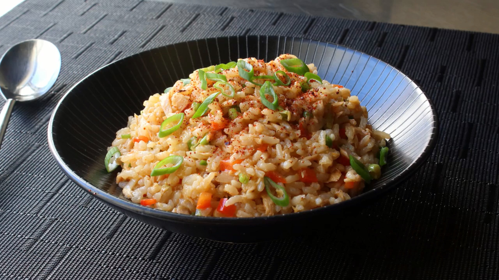

Spicy Tuna Rice Bowl

Description
What we have here is a fast, cheap, and easy recipe. While this
may remind some people of a fried rice dish, this is significantly
lighter and very low onf at content.
Ingredients
- 1 cup uncooked long-grain rice
- 1 1/2 cups water
- 1 (7 ounce) jar tuna packed in olive oil
- 1/2 cup finely diced red bell pepper
- 1/4 cup finely diced jalapeno pepper
- 1/4 cup finely sliced green onions
- 1/3 cup seasoned rice vinegar
- 1/2 lemon, juiced, or to taste
- 2 tablespoons soy sauce
- 2 teaspoons Sriracha hot sauce
- 1/2 teaspoon sesame oil
- 1 pinch Korean red pepper flakes(gochugaru), or to taste
- 1 teaspoon finely sliced green onion, or to taste
Steps
- Pour rice into a heavy pot and add water; swirl to allow rice to settle.
Bring to a simmer over medium-high heat; do not stir. Reduce heat to
low, cover,
and continue to simmer for 15 minutes.
- While rice is cooking, place tuna into a large mixing bowl and break up
with your
hands or a fork. Toss in red bell pepper, jalapeno, 1/4 cup green onions,
rice vinegar,
lemon juice, soy sauce, Sriracha, and sesame oil. Mix with a fork until
thoroughly combined.
- Turn off heat and let rice sit, covered, for 10 minutes.
- Fluff rice with a fork to separate the grains and break up any large clumps; transfer
into
the mixing bowl. Mix thoroughly with a spoon until all the ingredients are evenly
incorporated.
Taste and adjust seasoning if needed. Serve warm, at room temperature,
or cold like a rice salad,
topped with red pepper flakes and 1 teaspoon green onion.